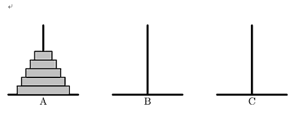

输入有两行。第一行为一个整数n（1≤n≤30），代表盘子的个数。第二行是一串大写的ABC字符，代表六种操
作的优先级，靠前的操作具有较高的优先级。每种操作都由一个空格隔开。
汉诺塔由三根柱子（分别用A B C表示）和n个大小互不相同的空心盘子组成。一开始n个盘子都摞在柱子A上，
大的在下面，小的在上面，形成了一个塔状的锥形体。

对汉诺塔的一次合法的操作是指：从一根柱子的最上层拿一个盘子放到另一根柱子的最上层，同时要保证被移
动的盘子一定放在比它更大的盘子上面（如果移动到空柱子上就不需要满足这个要求）。我们可以用两个字母来描
述一次操作：第一个字母代表起始柱子，第二个字母代表目标柱子。例如，AB就是把柱子A最上面的那个盘子移到
柱子B。汉诺塔的游戏目标是将所有的盘子从柱子A移动到柱子B或柱子C上面。有一种非常简洁而经典的策略可以帮
助我们完成这个游戏。首先，在任何操作执行之前，我们以任意的次序为六种操作（AB、AC、BA、BC、CA和CB）
赋予不同的优先级，然后，我们总是选择符合以下两个条件的操作来移动盘子，直到所有的盘子都从柱子A移动到
另一根柱子：（1）这种操作是所有合法操作中优先级最高的；（2）这种操作所要移动的盘子不是上一次操作所移
动的那个盘子。可以证明，上述策略一定能完成汉诺塔游戏。现在你的任务就是假设给定了每种操作的优先级，计
算按照上述策略操作汉诺塔移动所需要的步骤数。
输入有两行。第一行为一个整数n（1≤n≤30），代表盘子的个数。第二行是一串大写的ABC字符，代表六种操
作的优先级，靠前的操作具有较高的优先级。每种操作都由一个空格隔开。
只需输出一个数，这个数表示移动的次数。我们保证答案不会超过10的18次方。
3
AB BC CA BA CB AC
7